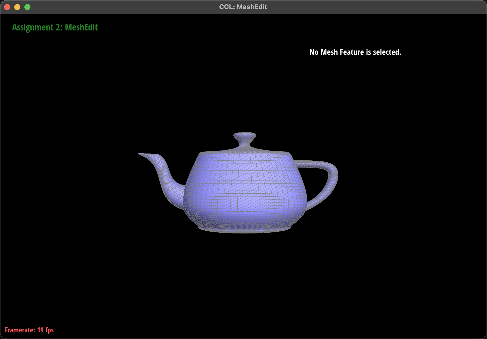
bez/teapot.bez with separable de Casteljau.This homework builds up two complementary ways of describing curved geometry. The first half evaluates Bezier curves and surfaces with de Casteljau's algorithm, which turns a handful of control points into a smooth parametric shape through nothing but repeated linear interpolation. The second half works directly on triangle meshes stored in a half-edge data structure, implementing area-weighted vertex normals, the two local remeshing operators (edge flip and edge split), and Loop subdivision built on top of those operators.
The most interesting thing about the second half is how little geometry is actually involved: an edge flip and an edge split are almost entirely pointer bookkeeping, and once those two operations are correct, Loop subdivision is just "split everything, flip the right new edges, then move the vertices to positions that were computed in advance." The hard part is not the math but the discipline of reassigning every pointer of every element in the modified neighborhood, because a single stale pointer produces a mesh that looks fine for one operation and then crashes several operations later.
All of the code lives in src/student_code.cpp. Beyond the required parts, this submission also
supports edge splits on boundary edges and Loop subdivision of meshes with boundary.
de Casteljau's algorithm evaluates a degree-\(n\) Bezier curve at a parameter \(t\) by repeated linear interpolation. Given \(n+1\) control points, you interpolate each adjacent pair at \(t\) to get \(n\) new points, \( p_i' = (1-t)\,p_i + t\,p_{i+1} \). Each round of interpolation shrinks the list by one, so after \(n\) rounds a single point remains, and that point lies on the curve at parameter \(t\). Intuitively, every level draws a smaller control polygon inscribed in the previous one, and the levels converge onto the curve.
BezierCurve::evaluateStep implements exactly one of these rounds: it walks the input vector,
linearly interpolates each adjacent pair at the class member t, and pushes the result onto an
output vector. Because the loop condition is i + 1 < points.size(), the returned vector is
always one shorter than the input, and the function naturally returns an empty vector if it is ever handed
a single point. The GUI calls this repeatedly, once per level, which is what the E key steps through.
The curve below is bzc/curve3.bzc, a degree-5 curve with six control points of my own choosing.
Each screenshot adds one level of subdivision (white squares are the original control points, blue squares
are intermediate points, the red square is the final evaluated point) and the green curve is the fully
evaluated Bezier curve toggled with C.
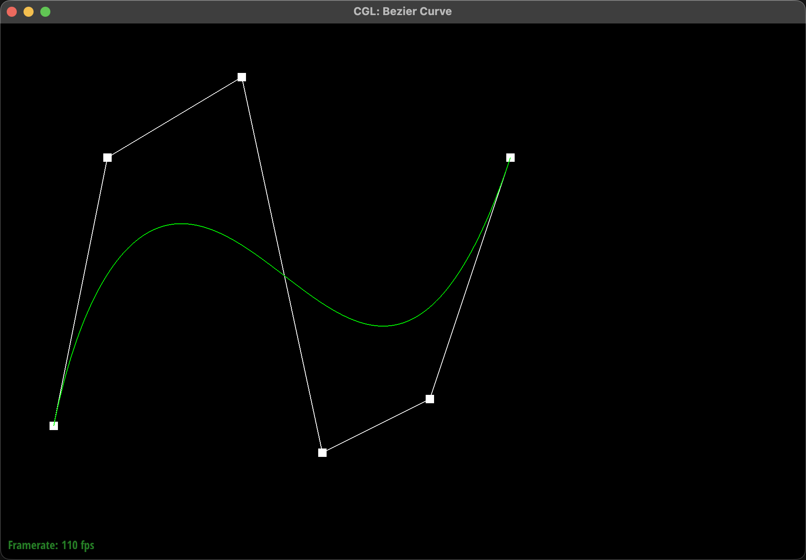 |
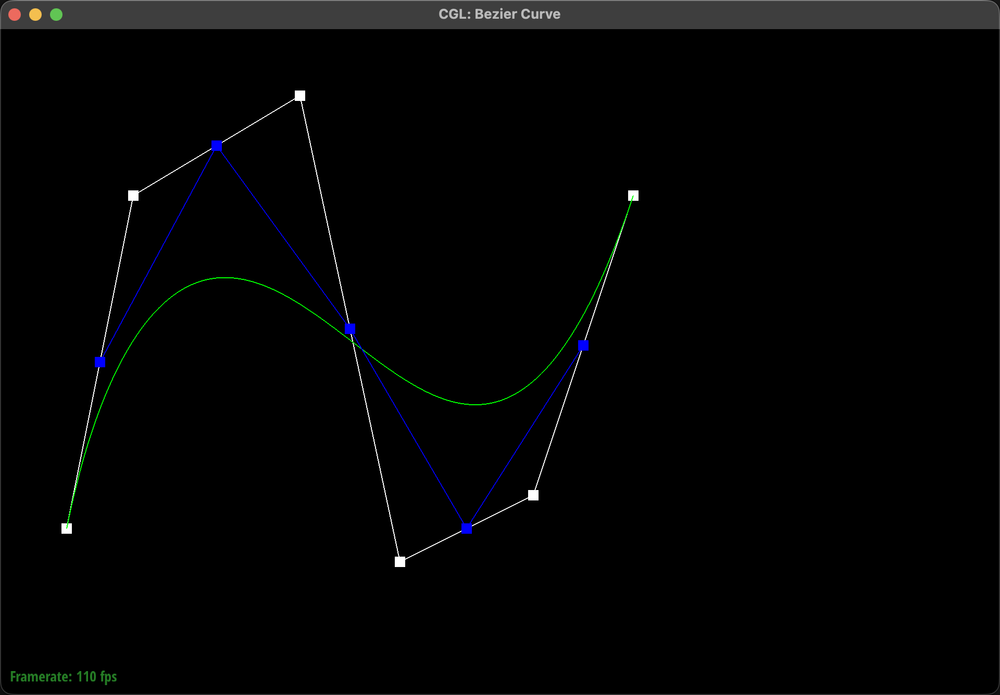 |
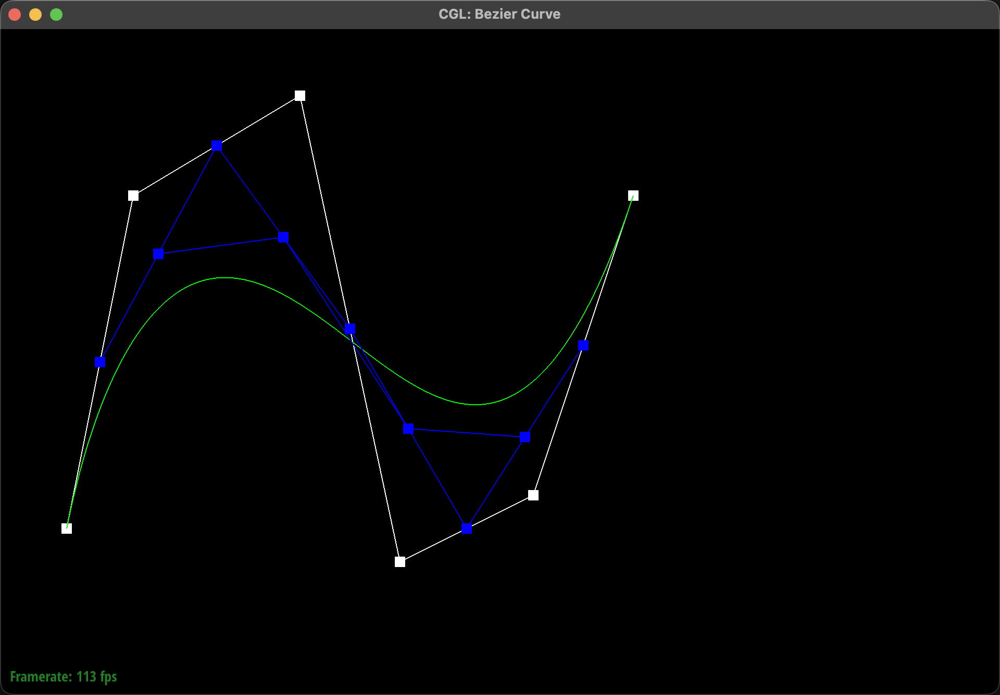 |
|
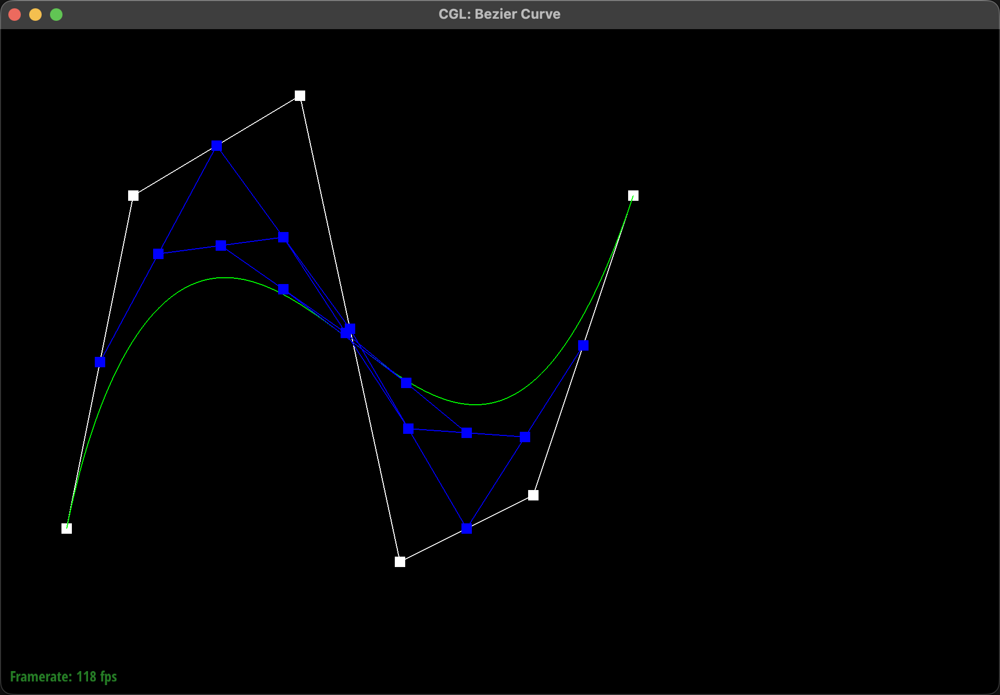 |
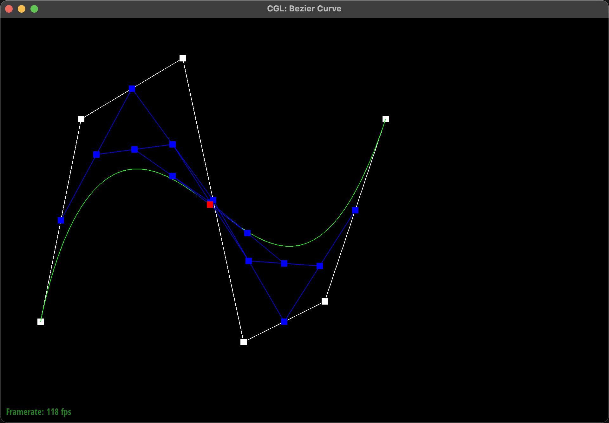 |
Dragging the control points and scrolling to change \(t\) updates everything live: the curve follows the new control polygon, and the whole tree of intermediate points slides along with the evaluated point.
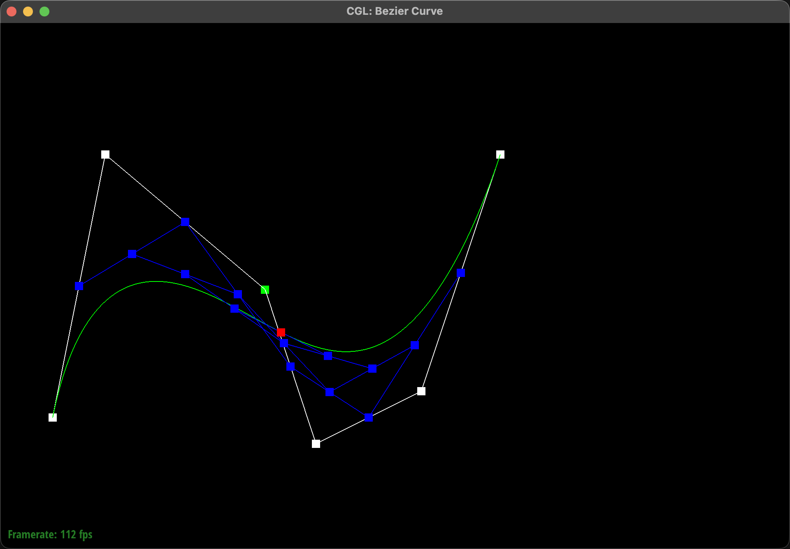 |
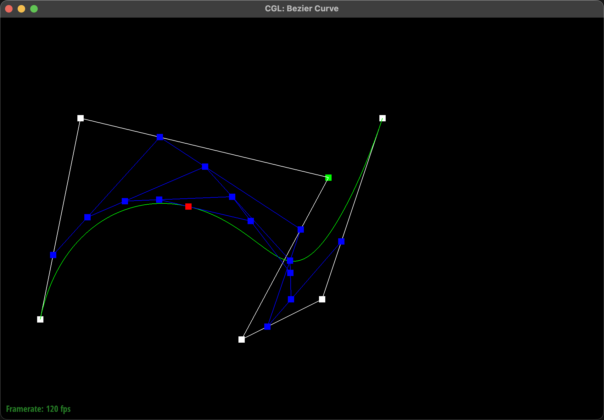 |
A Bezier patch is defined by an \(n \times n\) grid of control points and two parameters. The separable algorithm reuses the 1D case twice. First, treat each row of the grid as the control polygon of its own Bezier curve and evaluate it at \(u\); that collapses the grid down to a single column of \(n\) "moving" control points. Those \(n\) points are themselves the control polygon of a curve in the other direction, so evaluating them at \(v\) produces the surface point \( S(u,v) \). This works because the tensor-product Bernstein basis factors as a product of a basis in \(u\) and a basis in \(v\), so evaluating one direction at a time gives the same answer as evaluating both at once.
The implementation mirrors that structure directly. BezierPatch::evaluateStep is the same
interpolation loop as Part 1 but in 3D and with \(t\) passed as an argument instead of read from a member.
evaluate1D calls it in a while loop until only one point is left and returns that
point. evaluate then calls evaluate1D(controlPoints[i], u) for each row, collects
those results into a vector, and runs evaluate1D once more on that vector at \(v\).
bez/teapot.bez evaluated and tessellated by my implementation.
To get a vertex normal, I circulate the half-edges around the vertex with the usual
h = h->twin()->next() step, skipping any half-edge whose face is a boundary loop. For each
incident triangle I take the two edge vectors leaving this vertex, \( p_1 - p_0 \) and \( p_2 - p_0 \), and
accumulate their cross product. The convenient part is that no explicit area term is needed: the magnitude
of that cross product is already twice the triangle's area, so summing the raw cross products is the
area-weighted sum. Normalizing at the end with unit() cancels the factor of two.
Because the triangles are consistently oriented counter-clockwise when seen from outside, every cross
product points outward, so the result points outward too and the shading comes out correctly lit rather than
inverted. The function is const, so everything inside uses HalfedgeCIter.
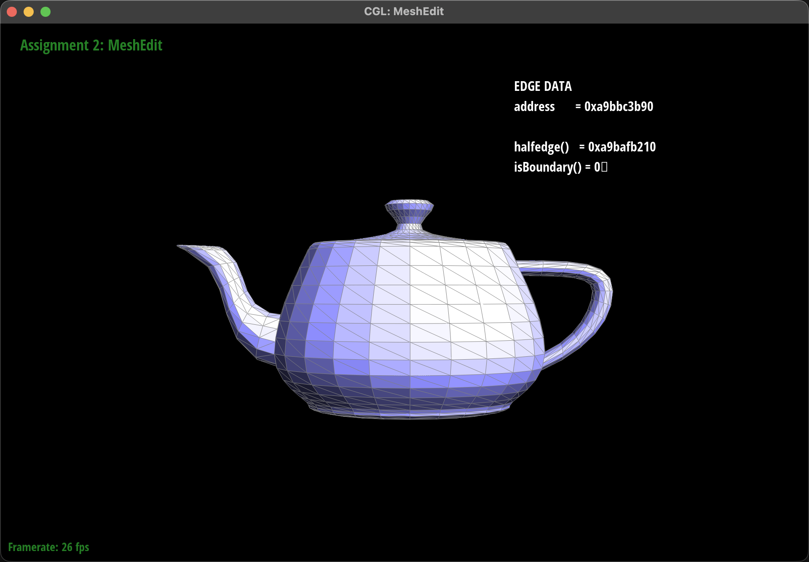 |
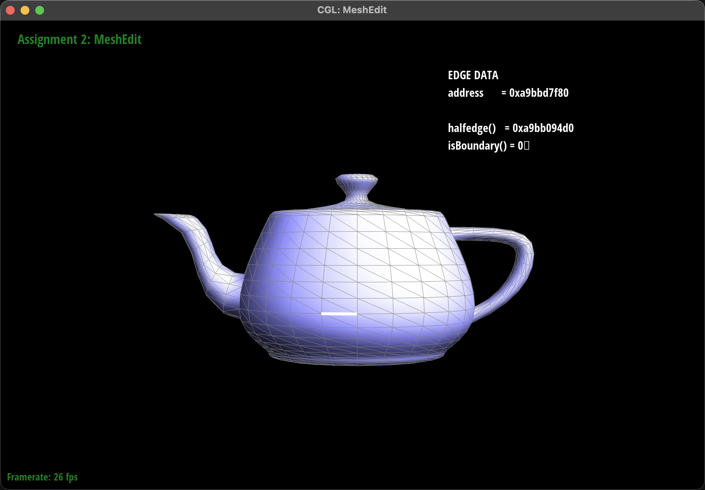 |
I followed the recommended recipe rather than trying to be clever. Starting from e0, I named
every element in the two incident triangles: the six half-edges of the two faces (h0–h5),
the four outside twins (h6–h9), the four vertices, the four surrounding edges,
and the two faces. Then I drew the post-flip configuration and reassigned all of the pointers,
including the ones that do not change, using setNeighbors for the half-edges and explicit
assignments for each vertex, edge, and face.
Concretely, with the two triangles \((v_0, v_1, v_2)\) and \((v_1, v_0, v_3)\), the quadrilateral they form runs \(v_1 \to v_2 \to v_0 \to v_3\), and flipping replaces the diagonal \(v_0 v_1\) with \(v_2 v_3\), producing \((v_2, v_0, v_3)\) and \((v_3, v_1, v_2)\). No elements are created or destroyed, nothing outside the two triangles is touched, and the function returns immediately if the edge is on the boundary (a boundary edge has only one real triangle, so there is no quadrilateral to re-triangulate).
The main implementation trick was writing the reassignments in face-by-face order (the three half-edges of
the first new triangle, then the three of the second) instead of in the order the variables were declared.
Grouping them that way makes each next chain readable as a cycle, which is where most pointer
mistakes hide. A detail worth noting: the vertices \(v_0\) and \(v_1\) that used to own the flipped edge may
have been pointing at a half-edge that no longer starts at them, so their halfedge() pointers
have to be reassigned even though the vertices themselves are untouched geometrically.
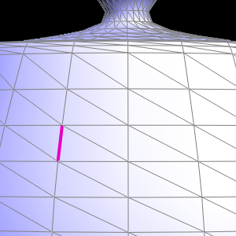 |
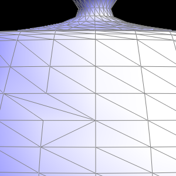 |
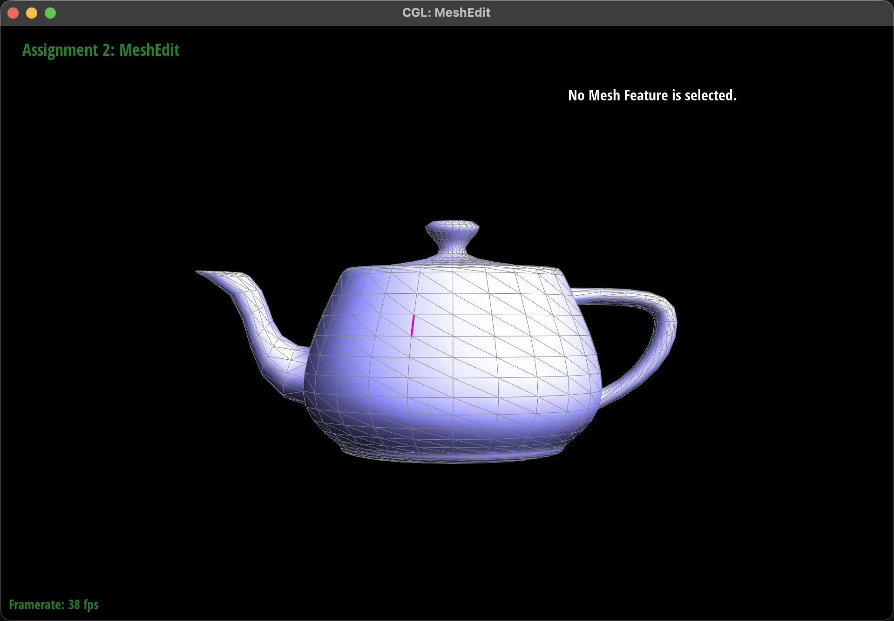 |
Debugging journey. Clicking edges in the GUI is a slow way to find pointer bugs, so I wrote a small
headless harness that builds an octahedron and an open triangulated grid, applies operations, and then checks
structural invariants after every one of them: h->twin()->twin() == h, every half-edge is
the next of exactly one other half-edge, h->twin()->vertex() == h->next()->vertex(),
every face cycle closes after three steps with a consistent face pointer, every vertex orbit closes and only
visits half-edges rooted at that vertex, and the half-edges are exactly partitioned among the faces and
boundary loops.
That harness immediately flagged "failures" that turned out not to be bugs, and understanding them was the
actually interesting part. Flipping several edges of an octahedron in a row eventually asks for a flip whose
two opposite vertices are already joined by an edge, or that would leave a vertex with degree two.
Such a flip is not well defined on a manifold mesh, and no implementation can make it come out clean —
this is the degenerate case the spec warns about. Adding a legality check to the test (not to
flipEdge) made those go away. A second false alarm was a vertex whose normal came out as
NaN; printing the un-normalized sum showed it was exactly zero, because repeated flips had
folded the little mesh so that the area-weighted face normals cancelled perfectly.
One genuine landmine did turn up, in the starter code rather than mine: HalfedgeMesh::build()
never assigns Face::halfedge() for the virtual boundary faces, so walking a boundary loop
starting from the face reads an uninitialized iterator and segfaults. Nothing in meshedit does
that, but my validator did, which cost some time before I realized the fresh, untouched mesh was already
"broken." My boundary split sets that pointer.
The split uses the same discipline as the flip, with the added step of allocating the new elements first.
Splitting a non-boundary edge needs one new vertex \(m\), three new edges (\(m\) to each opposite vertex,
plus the second half of the original edge), two new faces, and six new half-edges; the original edge and the
four surrounding edges are reused. The new vertex is placed at the midpoint,
0.5 * (v0->position + v1->position), and the four resulting triangles are
\((v_0, m, v_2)\), \((m, v_0, v_3)\), \((m, v_1, v_2)\), and \((v_1, m, v_3)\). As with the flip, I set
every pointer of every element in those four triangles, grouped face by face.
Two details mattered. First, the spec asks that the returned vertex's half-edge lie along the edge that was
split, so m->halfedge() is set to the half-edge that reuses the original edge
e0, not one of the new perpendicular edges. Second, I used the split to do the bookkeeping
Part 6 needs: the two halves of the original edge are marked isNew = false, the two edges
cutting across the old triangles are marked isNew = true, and the midpoint is marked
isNew = true. Doing it here means the subdivision routine never has to guess which edges it
just created.
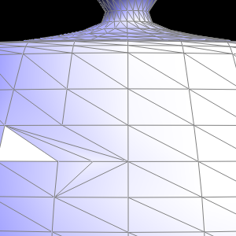 |
|
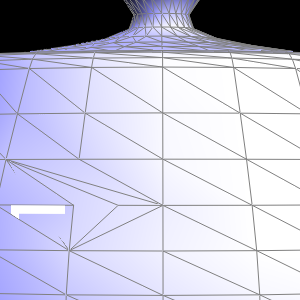 |
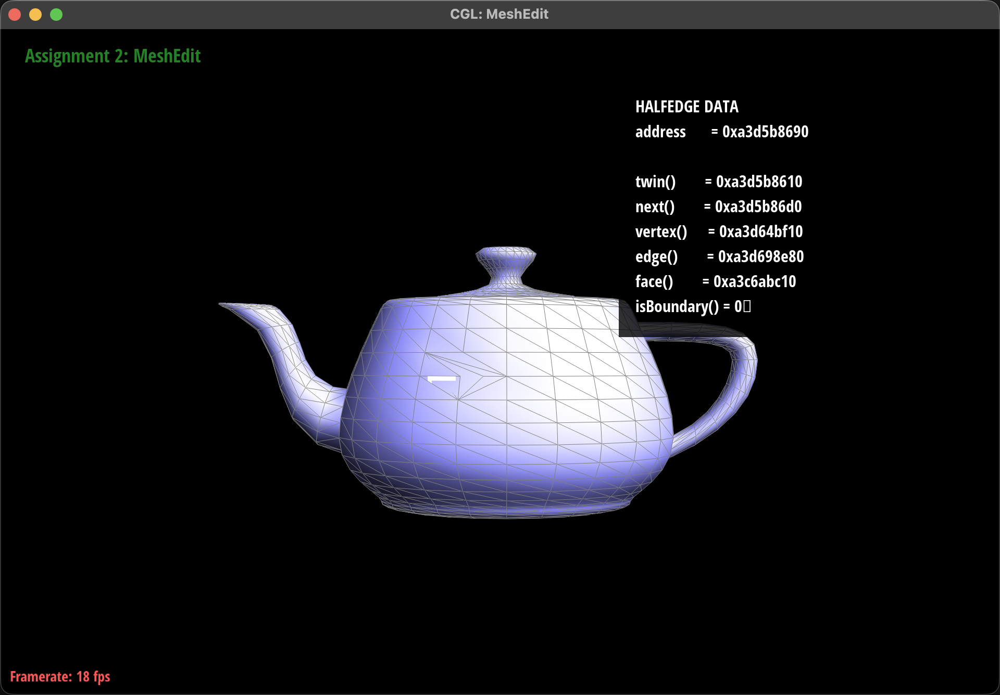 |
Debugging journey. The same harness carried over, and it checks the arithmetic as well as the
structure: one split must add exactly one vertex, three edges, and two faces, and the returned vertex's
half-edge must be rooted at it. I then ran alternating rounds of splits and flips over whole meshes,
re-validating after every round, which is the sort of stress test that catches pointers that are merely
mostly right. Thinking in terms of "which elements can possibly point at something I just changed"
was more productive than reading the code line by line; the vertex and face halfedge() back-pointers
are the ones that are easiest to forget, because nothing goes wrong until something else later tries to
circulate from them.
Extra credit: boundary edge splits. Splitting a boundary edge makes sense even though flipping one
does not, because a boundary edge still bounds exactly one real triangle, and that triangle can be cut in
two. My splitEdge detects the case and delegates to a helper that first orients itself so
h0 is the interior half-edge and its twin is the one living in the virtual boundary loop. It
splits only the interior triangle into two and then threads the midpoint into the boundary loop, so the loop
goes \(\ldots \to v_1 \to m \to v_0 \to \ldots\) instead of \(\ldots \to v_1 \to v_0 \to \ldots\). This
version creates one vertex, two edges, one face, and four half-edges.
Finding the predecessor of a half-edge inside a boundary loop is the one place where the obvious approach is
too slow: walking next around the loop costs time proportional to the length of the boundary,
which could be most of the mesh. Instead I circulate the half-edges around \(v_1\) and pick the one whose
twin lies in the same boundary loop, which is bounded by the vertex's degree and keeps the split local.
I used the recommended ordering: compute all of the new positions on the coarse mesh first, then change the connectivity, then write the positions in.
Step A loops over vertices, clears isNew, and stores the updated position in
newPosition. For an interior vertex of degree \(n\), that is
\( (1 - nu)\,p + u \sum p_{\mathrm{neighbor}} \) with \( u = 3/16 \) when \( n = 3 \) and \( u = 3/(8n) \)
otherwise. The degree and the neighbor sum both come out of a single circulation around the vertex. Then
Step A2 loops over edges, clears isNew, and stores \( \frac{3}{8}(A + B) + \frac{1}{8}(C + D) \)
in Edge::newPosition, where \(C\) and \(D\) are reached with
h->next()->next()->vertex() on each side. It is essential that
Vertex::position is not modified here, since every one of these averages is defined in terms of
the original positions.
Step B splits every original edge and then flips the right new ones. To avoid splitting edges that
were just created, I record mesh.nEdges() before the loop and split exactly that many edges,
which works because new edges are appended to the end of the list; I also advance the iterator before
splitting, since the split can invalidate assumptions about what comes next. After each split I copy the
edge's precomputed newPosition onto the fresh midpoint vertex. The flip pass then visits every
edge and flips those that are both new and connect an old vertex to a new one
(e->isNew && v0->isNew != v1->isNew). The halves of original edges are never
flipped, because splitEdge marked them as not new. Step C copies
newPosition into position for every vertex.
Debugging trick. Beyond the structural invariants, two cheap numerical tests found real problems faster than looking at pictures. First, subdividing a flat grid must leave every vertex exactly in the plane and inside the original footprint. Second, translating the input mesh by a constant must translate the output by exactly the same constant — this holds only if every weighted average has weights summing to one, so it catches a mistyped \(u\) or a forgotten term instantly, in a way that a slightly-wrong-looking blob never would. Both come out exact (error \(0\)) for the closed and the open test meshes.
What happens to sharp corners and edges. They get rounded off, and aggressively so. Loop subdivision replaces each vertex by a weighted average of its neighborhood, so anything with high curvature is pulled inward toward the local centroid; the sharper the feature, the further it moves. On the unit cube (corners at distance \(\sqrt{3} \approx 1.732\) from the center), three rounds of subdivision pull the corner in to \(1.041\). The effect can be reduced by pre-splitting edges near the feature: extra vertices around a corner mean the averaging stencil covers a smaller region of the surface, so the limit surface stays closer to the original. Measured on the same cube:
pre-split rounds corner distance after 3 subdivisions
0 1.0412
1 1.3857
2 1.5589 (original corner: 1.7321)
Note that pre-splitting changes only the connectivity, not the shape, yet it nearly halves the amount of shrinkage — the subdivision rules are driven entirely by how the mesh is connected.
The asymmetric cube, and how to fix it. Each square face of dae/cube.dae is triangulated
with a single diagonal, and those diagonals break the cube's symmetry: the eight corners are no longer
equivalent. Counting edges at each corner gives degrees of 3, 4, 4, 4, 5, 5, 5, and 6, purely because of how
many face diagonals happen to land on each one. Loop subdivision weights depend on vertex degree and on the
triangulation of the neighborhood, so
corners that were geometrically identical get moved by different amounts, and the cube subdivides into a
lopsided blob.
The fix is to pre-process so that the connectivity is as symmetric as the geometry. Splitting each of the six face diagonals inserts a vertex at the center of each face, connected to all four of that face's corners. Now every corner has degree 6, every face center has degree 4, and the mesh is invariant under the cube's rotation group — so the subdivision rules treat all corners identically and the result is symmetric. I measured this by rotating the subdivided vertex set by 90° about each axis and recording the largest distance from a rotated vertex to the nearest actual vertex (zero means perfectly symmetric):
asym(x) asym(y) asym(z) cube, 1 subdivision 0.414578 0.414578 0.414578 cube, 2 subdivisions 0.223170 0.234375 0.234375 cube, 3 subdivisions 0.171040 0.191886 0.191886 pre-split cube, 1 subdivision 0.000000 0.000000 0.000000 pre-split cube, 2 subdivisions 0.000000 0.000000 0.000000 pre-split cube, 3 subdivisions 0.000000 0.000000 0.000000
The pre-split cube is symmetric to the last bit at every level, while the original never recovers. Its
measured asymmetry does fall from level to level, but mostly because the whole shape is shrinking as it
smooths; it stays stubbornly non-zero. The same comparison is obvious by eye
(dae/cube_presplit.dae is the pre-processed cube, included in the repository):
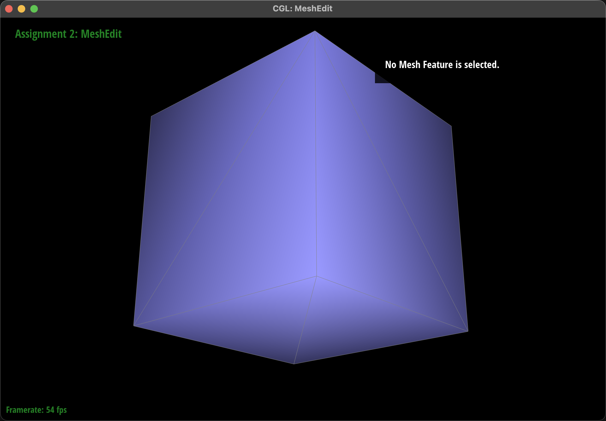 |
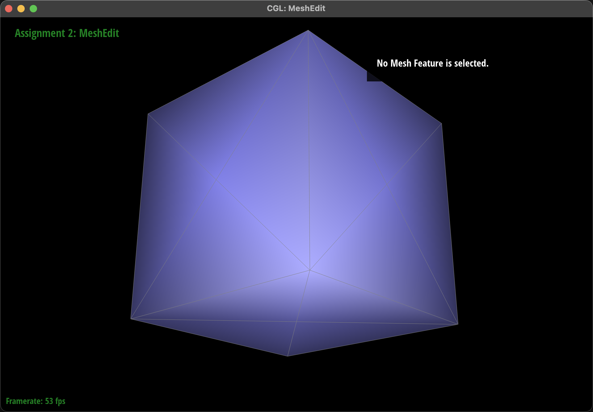 |
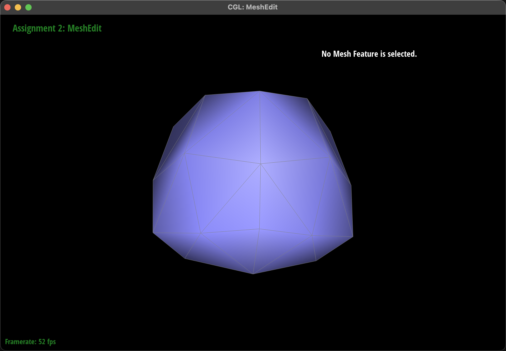 |
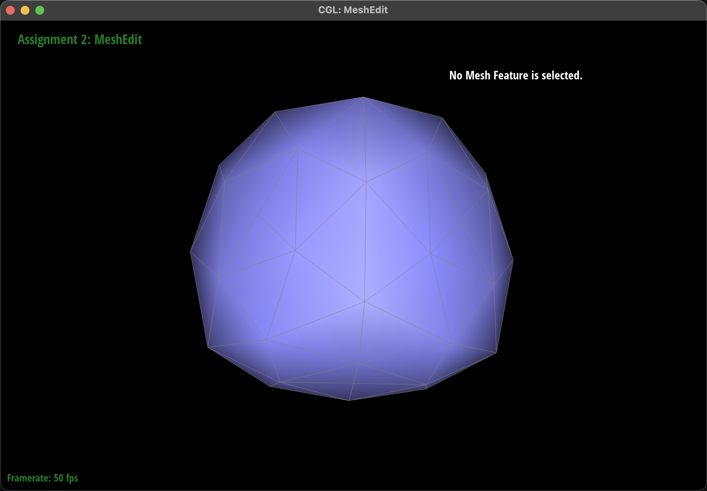 |
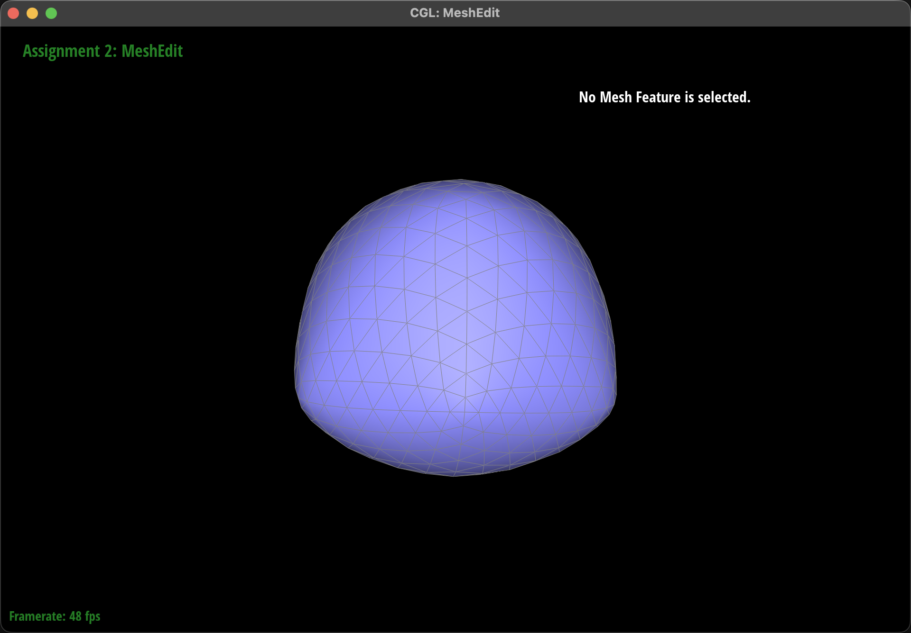 |
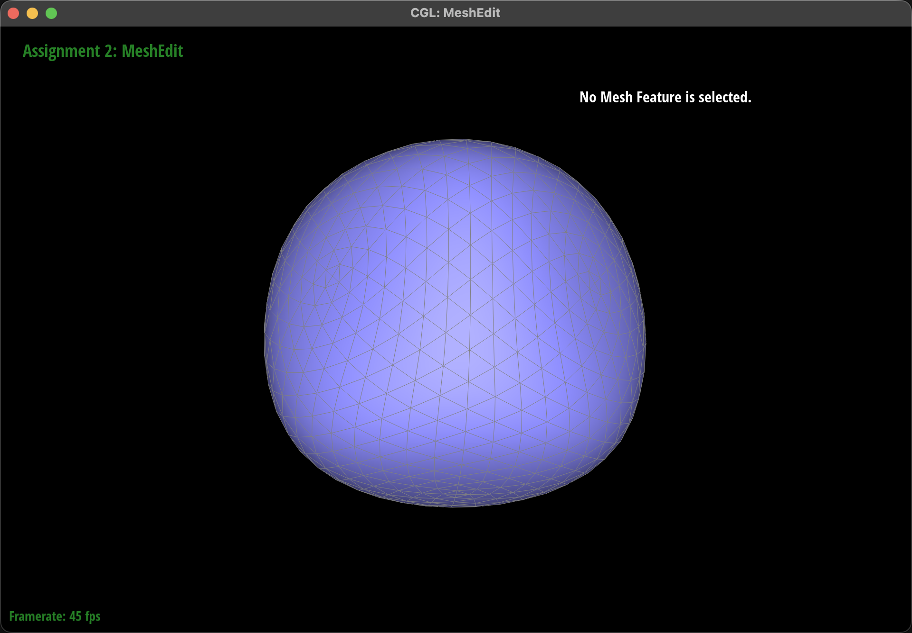 |
For reference, here is the plain cube subdividing from the default head-on camera, which is how the smoothing of the sharp corners and edges reads most clearly:
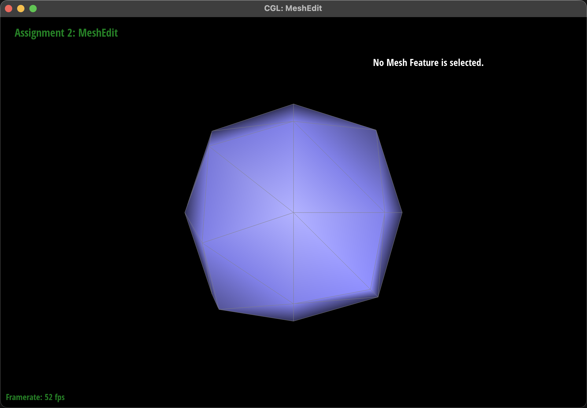 |
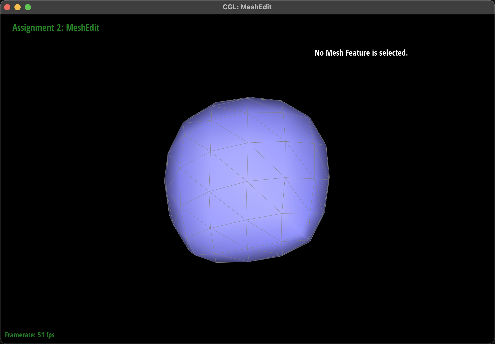 |
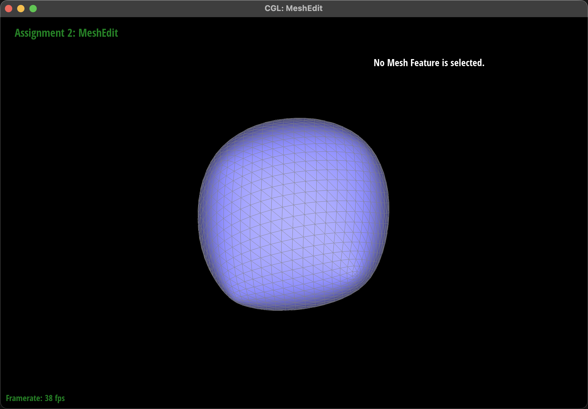 |
Extra credit: meshes with boundary. With boundary splits working, subdivision of an open mesh needs
only different averaging rules along the boundary. A new vertex inserted on a boundary edge goes to the
midpoint \( \frac{1}{2}(A + B) \) rather than the \(3/8, 1/8\) stencil, which would otherwise reach across
to an interior vertex that is not symmetric with respect to the edge. An old boundary vertex is updated as
\( \frac{3}{4} p + \frac{1}{8}(p_{\mathrm{prev}} + p_{\mathrm{next}}) \) using only its two boundary
neighbors, which is the cubic B-spline rule along the boundary curve and keeps the boundary from pulling
itself into the interior. Edge flips need no changes, since flipEdge already declines boundary
edges. On a triangulated square grid, subdivision gives the exact expected element counts
(\(F \to 4F\), \(E \to 2E + 3F\), \(V \to V + E\)), keeps the mesh planar, and keeps every vertex inside the
original footprint.